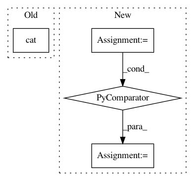

26421ce20c6b626ceacafbb3282cad1d5dce04ca,onmt/Models.py,Embeddings,forward,#Embeddings#Any#,60
Before Change
// Apply one MLP layer.
emb = self.activation(
self.linear(torch.cat([word] + features, -1)))
if self.positional_encoding:
emb = emb + Variable(self.pe[:emb.size(0), :1, :emb.size(2)]
After Change
Return:
emb (FloatTensor): len x batch x sum of feature embedding sizes
feat_inputs = (feat.squeeze(2) for feat in src_input.split(1, dim=2))
features = [lut(feat) for lut, feat in zip(self.emb_luts, feat_inputs)]
emb = self.merge(features)
return emb
In pattern: SUPERPATTERN
Frequency: 3
Non-data size: 4
Instances
Project Name: OpenNMT/OpenNMT-py
Commit Name: 26421ce20c6b626ceacafbb3282cad1d5dce04ca
Time: 2017-07-30
Author: bpeters@coli.uni-saarland.de
File Name: onmt/Models.py
Class Name: Embeddings
Method Name: forward
Project Name: OpenNMT/OpenNMT-py
Commit Name: 685126644ae540be72eb662527269a0395e2c9eb
Time: 2017-09-05
Author: bpeters@coli.uni-saarland.de
File Name: onmt/IO.py
Class Name:
Method Name: make_features
Project Name: OpenNMT/OpenNMT-py
Commit Name: c048078187945e1defb8abc3246cd305fb038c6a
Time: 2017-01-11
Author: alerer@fb.com
File Name: OpenNMT/onmt/Models.py
Class Name: Decoder
Method Name: forward